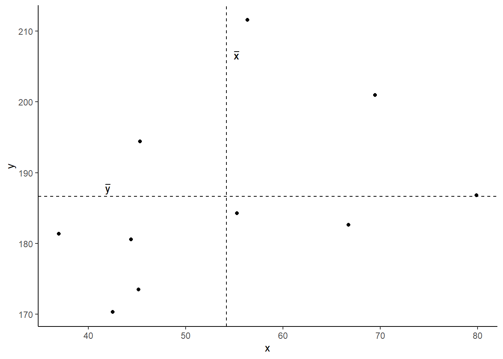
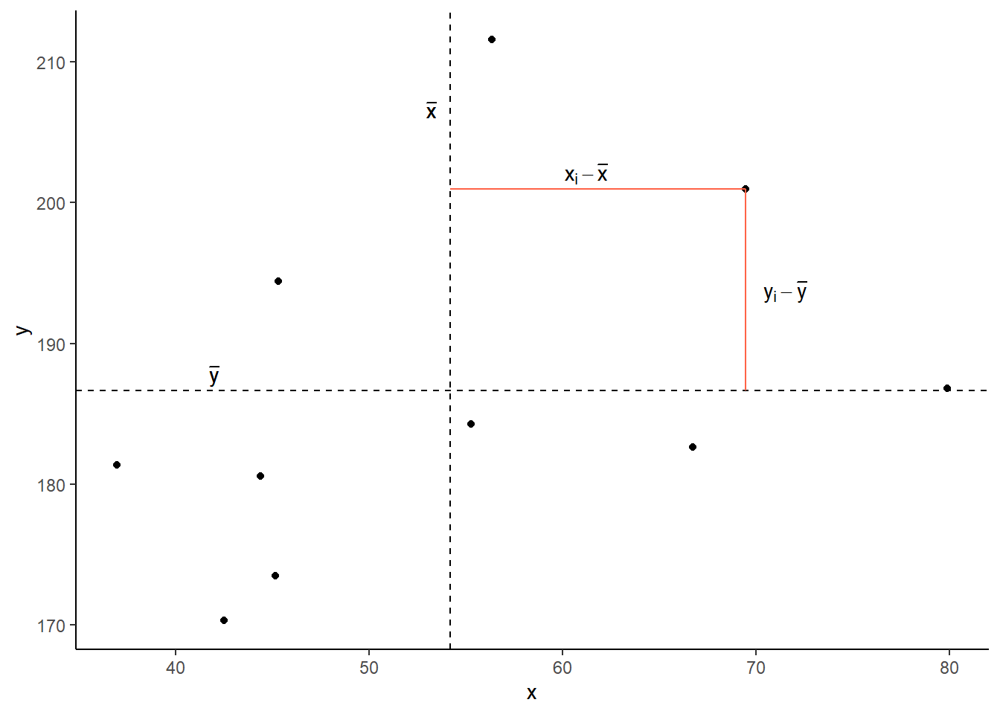
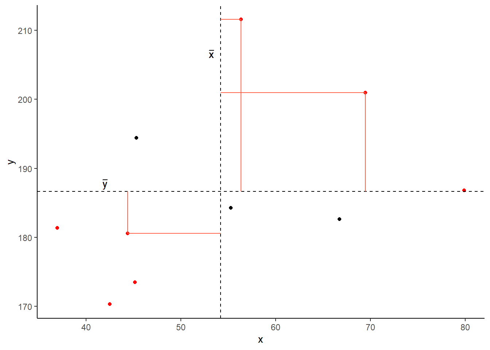
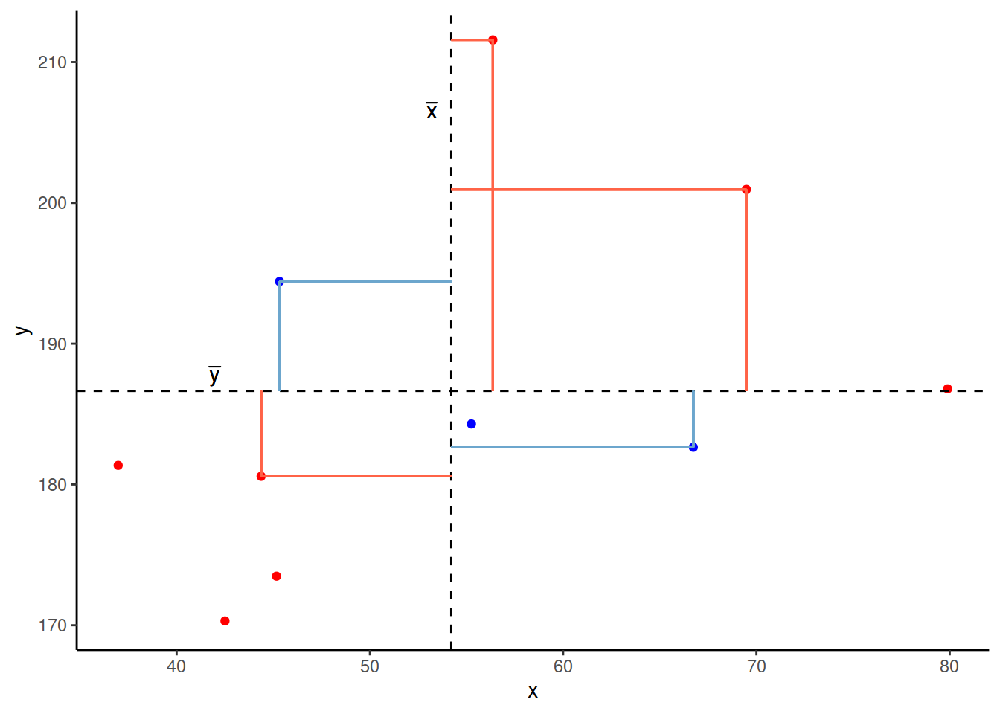
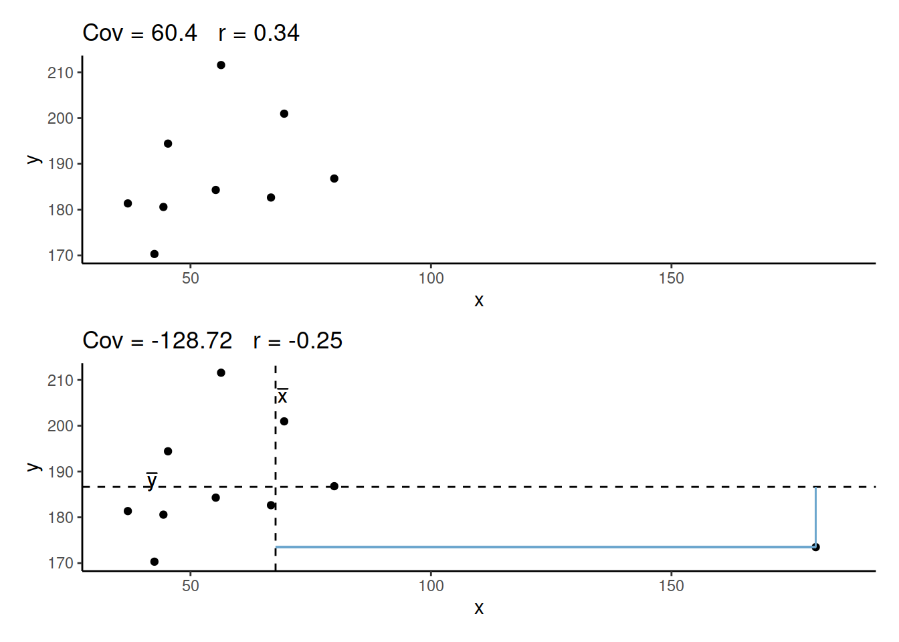
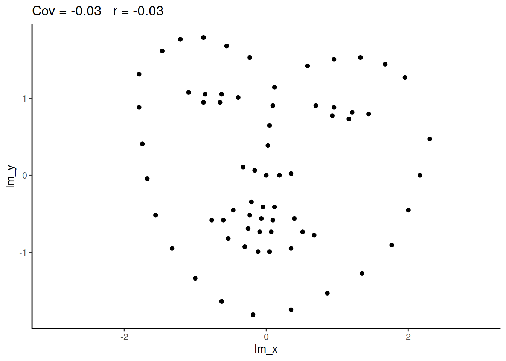
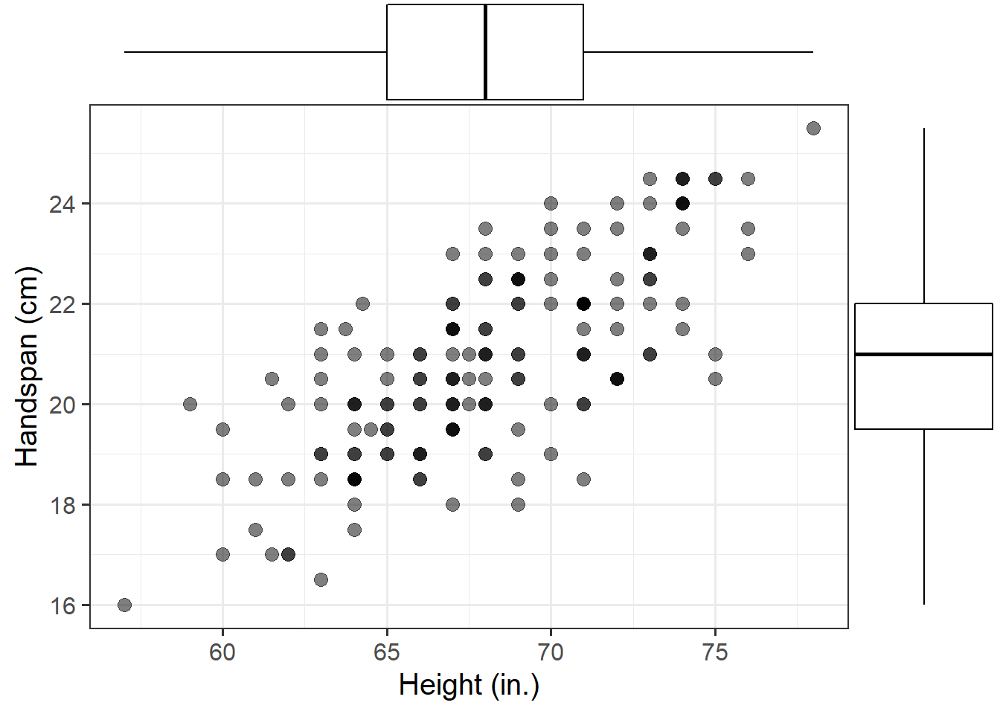
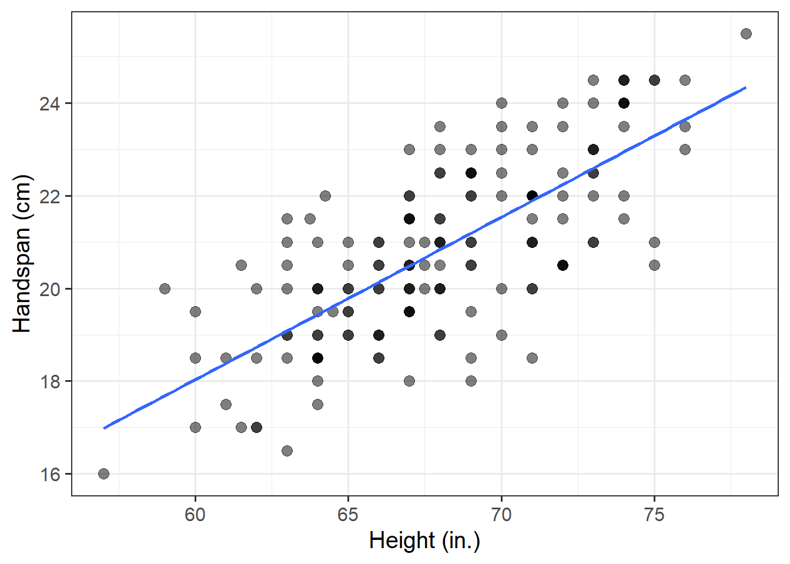

Our data for this walkthrough is from a (hypothetical) study on memory. Twenty participants studied passages of text (c500 words long), and were tested a week later. The testing phase presented participants with 100 statements about the text. They had to answer whether each statement was true or false, as well as rate their confidence in each answer (on a sliding scale from 0 to 100). The dataset contains, for each participant, the percentage of items correctly answered, and the average confidence rating. Participants’ ages were also recorded.
Let’s take a look at the relationships between the percentage of items answered correctly (recall_accuracy) and participants’ average self-rating of confidence in their answers (recall_confidence):
For participants who tended to be more confident in their answers, the percentage of items they correctly answered tends to be higher.
The older participants were, the lower the percentage of items they correctly answered tended to be.
Which relationship should we be more confident in and why?
Ideally, we would have some means of quantifying the strength and direction of these sorts of relationship. This is where we come to the two summary statistics which we can use to talk about the association between two numeric variables: Covariance and Correlation.
Covariance
Covariance is the measure of how two variables vary together. It is the change in one variable associated with the change in another variable.
For samples, covariance is calculated using the following formula:
\(x\) and \(y\) are two variables; e.g., age and recall_accuracy;
\(i\) denotes the observational unit, such that \(x_i\) is value that the \(x\) variable takes on the \(i\)th observational unit, and similarly for \(y_i\);
\(n\) is the sample size.
In R
We can calculate covariance in R using the cov() function. cov() can take two variables cov(x = , y = ).
cov(x = recalldata$recall_accuracy, y = recalldata$recall_confidence)
[1] 118.0768
Optional: Manually calculating covariance
Create 2 new columns in the memory recall data, one of which is the mean recall accuracy, and one which is the mean recall confidence.
# A tibble: 1 × 2
prod_sum n
<dbl> <int>
1 2243. 20
2243.46/ (20-1)
[1] 118.0768
Which is the same result as using cov():
cov(x = recalldata$recall_accuracy, y = recalldata$recall_confidence)
[1] 118.0768
Optional: Covariance explained visually
Consider the following scatterplot:

Now let’s superimpose a vertical dashed line at the mean of \(x\) (\(\bar{x}\)) and a horizontal dashed line at the mean of \(y\) (\(\bar{y}\)):

Now let’s pick one of the points, call it \(x_i\), and show \((x_{i}-\bar{x})\) and \((y_{i}-\bar{y})\).
Notice that this makes a rectangle.
As \((x_{i}-\bar{x})\) and \((y_{i}-\bar{y})\) are both positive values, their product - \((x_{i}-\bar{x})(y_{i}-\bar{y})\) - is positive.

In fact, for all these points in red, the product \((x_{i}-\bar{x})(y_{i}-\bar{y})\) is positive (remember that a negative multiplied by a negative gives a positive):
And for these points in blue, the product \((x_{i}-\bar{x})(y_{i}-\bar{y})\) is negative:

Now take another look at the formula for covariance:
It is the sum of all these products divided by \(n-1\). It is the average of the products!
Correlation - \(r\)
You can think of correlation as a standardized covariance. It has a scale from negative one to one, on which the distance from zero indicates the strength of the relationship.
Just like covariance, positive/negative values reflect the nature of the relationship.
The correlation coefficient is a standardised number which quantifies the strength and direction of the linear relationship between two variables. In a population it is denoted by \(\rho\), and in a sample it is denoted by \(r\).
We can calculate \(r\) using the following formula:
\[
r_{(x,y)}=\frac{\mathrm{cov}(x,y)}{s_xs_y}
\]
We can actually rearrange this formula to show that the correlation is simply the covariance, but with the values \((x_i - \bar{x})\) divided by the standard deviation (\(s_x\)), and the values \((y_i - \bar{y})\) divided by \(s_y\):
The correlation is the simply the covariance of standardised variables (variables expressed as the distance in standard deviations from the mean).
Properties of correlation coefficients
\(-1 \leq r \leq 1\)
The sign indicates the direction of association
positive association (\(r > 0\)) means that values of one variable tend to be higher when values of the other variable are higher
negative association (\(r < 0\)) means that values of one variable tend to be lower when values of the other variable are higher
no linear association (\(r \approx 0\)) means that higher/lower values of one variable do not tend to occur with higher/lower values of the other variable
The closer \(r\) is to \(\pm 1\), the stronger the linear association
\(r\) has no units and does not depend on the units of measurement
The correlation between \(x\) and \(y\) is the same as the correlation between \(y\) and \(x\)
In R
Just like R has a cov() function for calculating covariance, there is a cor() function for calculating correlation:
cor(x = recalldata$recall_accuracy, y = recalldata$recall_confidence)
[1] 0.6993654
Optional: Manually calculating correlation
We calculated above that \(\text{cov}(\text{recall-accuracy}, \text{recall-confidence})\) = 118.077.
To calculate the correlation, we can simply divide this by the standard deviations of the two variables \(s_{\text{recall-accuracy}} \times s_{\text{recall-confidence}}\)
cor(x = recalldata$recall_accuracy, y = recalldata$recall_confidence)
[1] 0.6993654
Correlation Test
Now that we’ve seen the formulae for covariance and correlation, as well as how to quickly calculate them in R using cov() and cor(), we can use a statistical test to establish the probability of finding an association this strong by chance alone.
Hypotheses
The hypotheses of the correlation test are, as always, statements about the population parameter (in this case the correlation between the two variables in the population - i.e., \(\rho\)).
Null Hypothesis:
\(H_0: \rho = 0\). There is not a linear relationship between \(x\) and \(y\) in the population.
Alternative Hypothesis:
\(H_1: \rho > 0\) There is a positive linear relationship between \(x\) and \(y\).
\(H_1: \rho < 0\) There is a negative linear relationship between \(x\) and \(y\).
\(H_1: \rho \neq 0\) There is a linear relationship between \(x\) and \(y\).
Test Statistic
The test statistic for this test here is another\(t\) statistic, the formula for which depends on both the observed correlation (\(r\)) and the sample size (\(n\)):
\[t = r \sqrt{\frac{n-2}{1-r^2}}\]
p-value
We calculate the p-value for our \(t\)-statistic as the long-run probability of a \(t\)-statistic with \(n-2\) degrees of freedom being less than, greater than, or more extreme in either direction (depending on the direction of our alternative hypothesis) than our observed \(t\)-statistic.
In R
We can test the significance of the correlation coefficient really easily with the function cor.test():
Pearson's product-moment correlation
data: recalldata$recall_accuracy and recalldata$recall_confidence
t = 4.1512, df = 18, p-value = 0.0005998
alternative hypothesis: true correlation is not equal to 0
95 percent confidence interval:
0.3719603 0.8720125
sample estimates:
cor
0.6993654
Optional: Manually conducting the correlation test
Or, if we want to calculate our test statistic manually:
#calculate rr =cor(recalldata$recall_accuracy, recalldata$recall_confidence)#get nn =nrow(recalldata)#calculate t tstat = r *sqrt((n -2) / (1- r^2))#calculate p-value for t, with df = n-2 2*(1-pt(tstat, df=n-2))
[1] 0.0005998222
Assumptions
For a test of Pearson’s correlation coefficient \(r\), we need to make sure a few conditions are met:
Both variables are quantitative
Both variables should be drawn from normally distributed populations.
The relationship between the two variables should be linear.
Cautions!
Correlation is an invaluable tool for quantifying relationships between variables, but must be used with care.
Below are a few things to be aware of when we talk about correlation.
Correlation can be heavily affected by outliers. Always plot your data!
The two plots below only differ with respect to the inclusion of one observation. However, the correlation coefficient for the two sets of observations is markedly different.

r = 0 means no linear association. The variables could still be otherwise associated. Always plot your data!
The correlation coefficient in Figure 1 below is negligible, suggesting no linear association. The word “linear” here is crucial - the data are very clearly related.

Figure 1: Unrelated data?
Similarly, take look at all the sets of data in Figure 2 below. The summary statistics (means and standard deviations of each variable, and the correlation) are almost identical, but the visualisations suggest that the data are very different from one another.
Figure 2: Datasaurus! From Matejka, J., & Fitzmaurice, G. (2017, May): Same stats, different graphs: generating datasets with varied appearance and identical statistics through simulated annealing.
You will have likely heard the phrase “correlation does not imply causation”. There is even a whole wikipedia entry devoted to the topic.
Just because you observe an association between x and y, we should not deduce that x causes y
An often cited paper (See Figure 4) which appears to fall foul of this error took a correlation between a country’s chocolate consumption and its number of nobel prize winners to suggest a causal relationship between the two:
Figure 4: Chocolate consumption causes more Nobel Laureates?
“since chocolate consumption has been documented to improve cognitive function, it seems most likely that in a dose-dependent way, chocolate intake provides the abundant fertile ground needed for the sprouting of Nobel laureates”
[Messerli, Franz. Chocolate Consumption, Cognitive Function, and Nobel Laureates. The New England Journal of Medicine 2012; 367:1562-4, (http://www.nejm.org/doi/full/10.1056/NEJMon1211064)]
Game: Guess the \(r\)
Take a break and play this “guess the correlation” game to get an idea of what different strengths and directions of \(r\) can look like.
(if the game is not showing, try http://guessthecorrelation.com/).
A researcher is interested in the relationship between hours slept per night and self-rated effects of sleep on daytime functioning. She recruited 50 healthy adults, and collected data on the Total Sleep Time (TST) over the course of a seven day period via sleep-tracking devices.
At the end of the seven day period, participants completed a Daytime Functioning (DTF) questionnaire. This involved participants rating their agreement with ten statements (see Table @ref(tab:sleepitems)). Agreement was measured on a scale from 1-5. An overall score of daytime functioning can be calculated by:
reversing the scores for items 4,5 and 6 (because those items reflect agreement with positive statements, whereas the other ones are agreement with negative statement);
summing the scores on each item; and
subtracting the sum score from 50 (the max possible score). This will make higher scores reflect better perceived daytime functioning.
The data is available at https://uoepsy.github.io/data/sleepdtf.csv.
Daytime Functioning Questionnaire
Item
Statement
Item_1
I often felt an inability to concentrate
Item_2
I frequently forgot things
Item_3
I found thinking clearly required a lot of effort
Item_4
I often felt happy
Item_5
I had lots of energy
Item_6
I worked efficiently
Item_7
I often felt irritable
Item_8
I often felt stressed
Item_9
I often felt sleepy
Item_10
I often felt fatigued
Question A1
Read in the data, and calculate the overall daytime functioning score, following the criteria outlined above. Make this a new column in your dataset.
Hints:
To reverse items 4, 5 and 6, we we need to make all the scores of 1 become 5, scores of 2 become 4, and so on… What number satisfies all of these equations: ? - 5 = 1, ? - 4 = 2, ? - 3 = 3?
To quickly sum accross rows, you can use the rowSums() function.
TST item_1 item_2 item_3 item_4
Min. : 4.900 Min. :1.00 Min. :1.00 Min. :1.00 Min. :1.00
1st Qu.: 7.225 1st Qu.:1.00 1st Qu.:2.00 1st Qu.:1.25 1st Qu.:1.00
Median : 7.900 Median :1.00 Median :2.00 Median :2.00 Median :1.00
Mean : 8.004 Mean :1.58 Mean :2.46 Mean :2.38 Mean :1.26
3rd Qu.: 9.025 3rd Qu.:2.00 3rd Qu.:3.00 3rd Qu.:3.00 3rd Qu.:1.00
Max. :11.200 Max. :3.00 Max. :5.00 Max. :5.00 Max. :3.00
item_5 item_6 item_7 item_8 item_9
Min. :1.00 Min. :1.00 Min. :1.00 Min. :1.0 Min. :1.00
1st Qu.:2.00 1st Qu.:2.00 1st Qu.:1.00 1st Qu.:2.0 1st Qu.:2.00
Median :2.00 Median :3.00 Median :2.00 Median :2.5 Median :3.00
Mean :2.36 Mean :2.78 Mean :2.04 Mean :2.5 Mean :2.96
3rd Qu.:3.00 3rd Qu.:4.00 3rd Qu.:3.00 3rd Qu.:3.0 3rd Qu.:4.00
Max. :4.00 Max. :5.00 Max. :4.00 Max. :4.0 Max. :5.00
item_10
Min. :1.00
1st Qu.:2.00
Median :3.00
Mean :2.54
3rd Qu.:3.00
Max. :5.00
# To reverse the items, we can simply do 6 minus the score. sleepdtf <- sleepdtf %>%mutate(item_4=6-item_4,item_5=6-item_5,item_6=6-item_6 ) # Now using rowSums(), and subtracting it from 50 (the max score)sleepdtf$dtf =50-rowSums(sleepdtf[, 2:11])
Question A2
Calculate the correlation between the total sleep time (TST) and the overall daytime functioning score.
Conduct a test to establish the probability of observing a correlation this strong in a sample of this size assuming the true correlation to be 0.
Write a sentence or two summarising the results.
Solution
cor.test(sleepdtf$TST, sleepdtf$dtf)
Pearson's product-moment correlation
data: sleepdtf$TST and sleepdtf$dtf
t = 6.244, df = 48, p-value = 1.062e-07
alternative hypothesis: true correlation is not equal to 0
95 percent confidence interval:
0.4807039 0.7989417
sample estimates:
cor
0.6694741
There was a strong positive correlation between total sleep time and self-reported daytime functioning score (\(r\) = 0.67, \(t(48)\) = 6.24, \(p < .001\)) in the current sample. As total sleep time increased, levels of self-reported daytime functioning increased.
Question A3
Open-ended: Think about this relationship in terms of causation.
Claim: Less sleep causes poorer daytime functioning.
Why might it be inappropriate to make the claim above based on these data alone? Think about what sort of study could provide stronger evidence for such a claim.
Things to think about:
comparison groups.
random allocation.
measures of daytime functioning.
measures of sleep time.
other (unmeasured) explanatory variables.
Functions and Models Exercises
Question B1
The Scottish National Gallery kindly provided us with measurements of side and perimeter (in metres) for a sample of 10 square paintings.
Plot the data from the Scottish National Gallery using ggplot().
We know that there is a mathematical model for the relationship between the side-length and perimeter of squares: \(perimeter = 4 \times \ side\).
Try adding the following line to your plot:
The exact relationship between side and perimeter of squares.
The above plot shows perfect agreement between the observed data and the model.
Question B2
Use our mathematical model to predict the perimeter of a painting with a side of 1.5 metres.
We do not have a painting with a side of 1.5 metres within the random sample of paintings from the Scottish National Gallery. We predict the perimeter of an unobserved squared painting having a 1.5 metre side using the mathematical model.
You can obtain this prediction either using a visual approach or an algebraic one.
Solution
Visual approach
Sometimes we can directly read a predicted value from the graph of the functional relationship.
Consider the plot created in the previous question. First, we need to check where x = 1.5. Then, we draw a vertical dashed line until it meets the blue line. The y value corresponding to x = 1.5 can be read off the y-axis.
However, in this case it is not that easy to read it from the drawing… Let’s try the next approach.
Algebraic approach
You can substitute the x value in the formula and calculate the corresponding y value.
\[
y = 4 \times \ x = 4 \times \ (1.5) = 6
\]
We might write this up as:
The predicted perimeter of squared paintings having a 1.5m side is 6m.
NOTE: Don’t forget to always include the measurement units when reporting/writing-up results!
Question B3
Consider now the relationship between height (in inches) and handspan (in cm). @Utts2015 provides data for a sample of 167 students who reported their height and handspan as part of a class survey.
The data set records the height and handspan reported by a random sample of 167 students as part of a class survey [@Utts2015].
The variables are:
height, measured in inches
handspan, measured in centimetres
Preview
The first six rows of the data are:
height
handspan
68
21.5
71
23.5
73
22.5
64
18.0
68
23.5
59
20.0
Read the handheight data into R, and investigate how handspan varies as a function of height for the students in the sample.
Do you notice any outliers or points that do not fit with the pattern in the rest of the data?
Comment on any main differences you notice between this relationship and the relationship between sides and perimeter of squares.
Solution
The handheight data set contains two variables, height and handspan, which are both numeric and continuous. We display the relationship between two numeric variables with a scatterplot.
We can also add marginal boxplots for each variable using the package ggExtra. Before using the package, make sure you have it installed via install.packages('ggExtra').
handheight <-read_csv(file ='https://uoepsy.github.io/data/handheight.csv')library(ggExtra)plt <-ggplot(handheight, aes(x = height, y = handspan)) +geom_point(size =3, alpha =0.5) +labs(x ='Height (in.)', y ='Handspan (cm)')ggMarginal(plt, type ='boxplot')

The statistical relationship between height and handspan.
Outliers are extreme observations that do not seem to fit with the rest of the data. This could either be:
marginally along one axis: points that have an unusual (too high or too low) x-coordinate or y-coordinate;
jointly: observations that do not fit with the rest of the point cloud.
The boxplots in Figure @ref(fig:handheight-scatterplot) do not highlight any outliers in the marginal distributions of height and handspan. Furthermore, from the scatterplot we do not notice any extreme observations or points that do not fit with the rest of the point cloud.
We notice a moderate, positive (that is, increasing) linear relationship between height and handspan.
Recall Figure @ref(fig:squares-scatterplot), displaying the relationship between side and perimeters of squares. In the plot we notice two points on top of each other, reflecting the fact that two squares having the same side will always have the same perimeter. In fact, the data from the Scottish National Gallery include two squared paintings with a side of 1.1m, both having a measured perimeter of 4.4m.
Figure @ref(fig:handheight-scatterplot), instead, displays the relationship between height and handspan of a sample of students. The first thing that grabs our attention is the fact that students having the same height do not necessarily have the same handspan. Rather, we clearly see a variety of handspan values for students all having a height of, for example, 70in. To be more precise, the seven students who are 70 in. tall all have differing handspans.
Question B4
Using the following command, superimpose on top of your scatterplot a best-fit line describing how handspan varies as a function of height. For the moment, the argument se = FALSE tells R to not display uncertainty bands.
geom_smooth(method = lm, se = FALSE)
Comment on any differences you notice with the line summarising the linear relationship between side and perimeter.
Solution
ggplot(handheight, aes(x = height, y = handspan)) +geom_point(size =3, alpha =0.5) +geom_smooth(method = lm, se =FALSE) +labs(x ='Height (in.)', y ='Handspan (cm)')

The best-fit line.
The line representing the relationship between side and perimeter of squares is able to predict the actual perimeter value from the measurement of the side of a square. This is possible because the relationship between side and perimeter is an exact one. That is, any squares having the same side will have the same perimeter, and there will be no variation in those values.
The line that best fits the relationship between height and handspan, instead, is only able to predict the average handspan for a given value of height. This is because there will be a distribution of handspans at each value of height. The line will fit the trend/pattern in the values, but there will be individual-to-individual variability that we must accept around that average pattern.
The mathematical model \(Perimeter = 4 \times \ Side\) represents the exact relationship between side-length and perimeter of squares.
In contrast, the relationship between height and handspan shows deviations from an “average pattern”. Hence, we need to create a model that allows for deviations from the linear relationship. This is called a statistical model.
A statistical model includes both a deterministic function and a random error term:
The deterministic function need not be linear if the scatterplot displays signs of nonlinearity. In the equation above, the terms \(\beta_0\) and \(\beta_1\) are numbers specifying where the line going through the data meets the y-axis and its slope (rate of increase/decrease).
What is your best guess for the handspan of a student who is 73in tall?
And for students who are 5in?
Solution
The predicted average handspan for students who are 73in tall is \(-3 + 0.35 * 73 = 22.55\)cm.
The predicted average handspan for students who are 5in tall is \(-3 + 0.35 * 5 = -1.25\)cm. But wait, handspan can not be negative… This does not make any sense! That’s right, we went too far off the range of the available data on heights, which were between 57in and 78in. We extrapolated. This is very dangerous…
Source: Randall Munroe, xkcd.com
References
Footnotes
Yes, the error term is gone. This is because the line of best-fit gives you the prediction of the average handspan for a given height, and not the individual handspan of a person, which will almost surely be different from the prediction of the line.↩︎